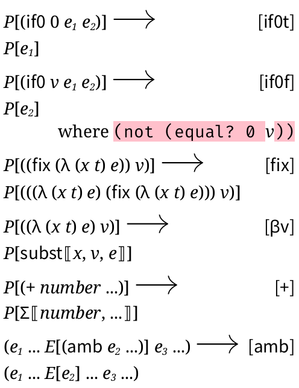
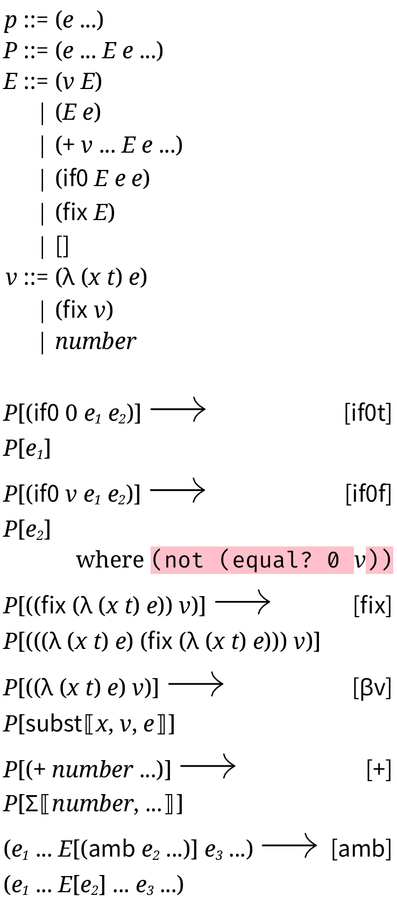
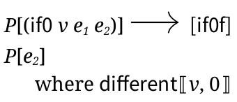
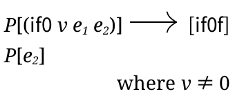

1 Amb: A Redex Tutorial
This tutorial is designed for those familiar with the call-by-value λ-calculus (and evaluation contexts), but not Redex. The tutorial works though a model of the λ-calculus extended with a variation on McCarthy’s amb operator for ambiguous choice (McCarthy 1963; Zabih et al. 1987).
If you are not familiar with Racket, first try Quick: An Introduction to Racket with Pictures or More: Systems Programming with Racket.
The model includes a standard evaluation reduction relation and a type system. Along the way, the tutorial demonstrates Redex’s support for unit testing, random testing, typesetting, metafunctions, reduction relations, and judgment forms. It also includes a number of exercises to use as jumping off points to explore Redex in more depth, and each of the functions and syntactic forms used in the examples are linked to more information.
1.1 Defining a Language
Next, enter the following definition.
(define-language L (e (e e) (λ (x t) e) x (amb e ...) number (+ e ...) (if0 e e e) (fix e)) (t (→ t t) num) (x variable-not-otherwise-mentioned))
The define-language form gives a name to a grammar. In this case, L is the Racket-level name referring to the grammar containing the non-terminal e, with six productions (application, abstraction, variables, amb expressions, numbers, and addition expressions), the non-terminal t with two productions, and the non-terminal x that uses the pattern keyword variable-not-otherwise-mentioned. This special pattern matches all symbols except those used as literals in the grammar (in this case: λ, amb, +, and →).
Once we have defined the grammar, we can ask Redex if specific terms match the grammar. This expression checks to see if the e non-terminal (from L) matches the object-language expression (λ (x) x).
To do this, first click the Run button in DrRacket’s toolbar and then enter the following expression after the prompt. For the remainder of this tutorial, expressions prefixed with a > are intended to be run in the interactions window (lower pane), and expressions without the > prefix belong in the definitions window (the upper pane).
> (redex-match L e (term (λ (x) x))) #f
In general, a redex-match expression first names a language, then a pattern, and then its third position is an arbitrary Racket expression. In this case, we use term to construct an Redex object-level expression. The term operator is much like Lisp’s quasiquote (typically written ‘).
This term does not match e (since e insists the function parameters come with types), so Redex responds with #f, false.
When an expression does match, as with this one:
> (redex-match L e (term ((λ (x num) (amb x 1)) (+ 1 2))))
(list
(match
(list
(bind
'e
'((λ (x num) (amb x 1)) (+ 1 2))))))
Redex responds with bindings for all of the pattern variables. In this case, there is just one, e, and it matches the entire expression.
We can also use matching to extract sub-pieces. For example, we can pull out the function and argument position of an application expression like this:
> (redex-match L (e_1 e_2) (term ((λ (x num) (amb x 1)) (+ 1 2))))
(list
(match
(list
(bind 'e_1 '(λ (x num) (amb x 1)))
(bind 'e_2 '(+ 1 2)))))
As you probably noticed, redex-match returns a list of matches, not just a single match. The previous matches each only matched a single way, so the corresponding lists only have a single element. But a pattern may be ambiguous, e.g., the following pattern which matches any non-empty sequence of expressions, but binds different elements of the sequence in different ways:
> (redex-match L (e_1 ... e_2 e_3 ...) (term ((+ 1 2) (+ 3 4) (+ 5 6))))
(list
(match
(list
(bind 'e_1 '())
(bind 'e_2 '(+ 1 2))
(bind 'e_3 '((+ 3 4) (+ 5 6)))))
(match
(list
(bind 'e_1 '((+ 1 2)))
(bind 'e_2 '(+ 3 4))
(bind 'e_3 '((+ 5 6)))))
(match
(list
(bind 'e_1 '((+ 1 2) (+ 3 4)))
(bind 'e_2 '(+ 5 6))
(bind 'e_3 '()))))
Exercise 1
Exercise 2
Use redex-match to extract the range portion of the type (→ num (→ num num)).
Exercise 3
Redex’s pattern language supports ambiguity through non-terminals, the in-hole pattern, and ellipsis placement (as in the example just above). Use the latter source of ambiguity to design a pattern that matches one way for each adjacent pair of expressions in a sequence. That is, if you match the sequence (1 2 3 4), then you’d expect one match for 1 & 2, one match for 2 & 3, and one match for 3 & 4. In general, this pattern should produce n matches when there are n+1 expressions in the sequence.
(redex-match L ; your solution goes here (term (1 2 3 4)))
(list (match (list (bind 'e_1 1) (bind 'e_2 2))) (match (list (bind 'e_1 2) (bind 'e_2 3))) (match (list (bind 'e_1 3) (bind 'e_2 4))))
Exercise 4
((λ (x ..._1) e) v ..._1)
Use this facility to write a pattern that matches odd length lists of expressions, returning one match for each pair of expressions that are equidistant from the ends of the sequence. For example, if matching the sequence (1 2 3 4 5), there would be two matches, one for the pair 1 & 5 and another for the pair 2 & 4. Your match should include the bindings e_left and e_right that extract these pairs (one element of the pair bound to e_left and the other to e_right). Test your pattern with redex-match.
1.2 Typing
To support a type system for our language, we need
to define type environments, which we do by extending
the language L with a new non-terminal
Γ, that we use to represent environments; and
by letting the middle dot ·—
(define-extended-language L+Γ L [Γ · (x : t Γ)])
The define-extended-language form accepts the name of the new language, the name of the extended language and then a series of non-terminals just like define-language.
In the extended language, we can give all of the typing rules for our language. Ignoring the #:mode specification for a moment, the beginning of this use of define-judgment-form has a contract declaration indicating that the judgments all have the shape (types Γ e t).
(define-judgment-form L+Γ #:mode (types I I O) #:contract (types Γ e t) [(types Γ e_1 (→ t_2 t_3)) (types Γ e_2 t_2) ------------------------- (types Γ (e_1 e_2) t_3)] [(types (x : t_1 Γ) e t_2) ----------------------------------- (types Γ (λ (x t_1) e) (→ t_1 t_2))] [(types Γ e (→ (→ t_1 t_2) (→ t_1 t_2))) --------------------------------------- (types Γ (fix e) (→ t_1 t_2))] [--------------------- (types (x : t Γ) x t)] [(types Γ x_1 t_1) (side-condition (different x_1 x_2)) ------------------------------------ (types (x_2 : t_2 Γ) x_1 t_1)] [(types Γ e num) ... ----------------------- (types Γ (+ e ...) num)] [-------------------- (types Γ number num)] [(types Γ e_1 num) (types Γ e_2 t) (types Γ e_3 t) ----------------------------- (types Γ (if0 e_1 e_2 e_3) t)] [(types Γ e num) ... -------------------------- (types Γ (amb e ...) num)])
The first clause gives the typing rule for application expressions, saying that if e_1 has the type (→ t_2 t_3) and e_2 has the type t_2, then the application expression has the type t_3.
Similarly, the other clauses give the typing rules for all of the other forms in the language.
Most of the rules use types, or give base types to atomic expressions, but the fifth rule is worth a special look. It says that if a variable type checks in some environment, then it also type checks in an extended environment, provided that the environment extension does not use the variable in question.
(define-metafunction L+Γ [(different x_1 x_1) #f] [(different x_1 x_2) #t])
The #:mode specification tells Redex how to compute derivations. In this case, the mode specification indicates that Γ and e are to be thought of as inputs, and the type position is to be thought of as an output.
Redex then checks that spec, making sure that, given a particular Γ and e, it can compute a t or, perhaps, multiple ts (if the patterns are ambiguous, or if multiple rules apply to a given pair of Γ and e).
1.3 Testing Typing
The judgment-holds form checks to see if a potential judgment is derivable. For example,
> (judgment-holds (types · ((λ (x num) (amb x 1)) (+ 1 2)) t) t) '(num)
In general, the judgment-holds form’s first argument is an instance of some judgment-form that should have concrete terms for the I positions in the mode spec, and patterns in the positions labeled O. Then, the second position in judgment-holds is an expression that can use the pattern variables inside those O positions. The result of judgment-holds will be a list of terms, one for each way that the pattern variables in the O positions can be filled when evaluating judgment-holds’s second position.
For example, if we wanted to extract only the range position of the type of some function, we could write this:
> (judgment-holds (types · (λ (f (→ num (→ num num))) (f (amb 1 2))) (→ t_1 t_2)) t_2) '((→ num num))
The result of this expression is a singleton list containing the function type that maps numbers to numbers. The reason you see two open parentheses is that Redex exploits Racket’s s-expressions to reflect Redex terms as Racket values. Here’s another way to write the same value
> (list (term (→ num num))) '((→ num num))
Racket’s printer does not know that it should use term for the inner lists and list (or quote) for the outer list, so it just uses the quote notation for all of them.
> (test-equal (judgment-holds (types · (λ (x num) x) t) t) (list (term (→ num num))))
> (test-equal (judgment-holds (types · (amb 1 2 3) t) t) (list (term num)))
> (test-equal (judgment-holds (types · (+ 1 2) t) t) (list (term (→ num num))))
FAILED :26.0
actual: '(num)
expected: '((→ num num))
Redex is silent when tests pass and gives the source location for the failures, as above. The test-equal form accepts two expressions, evaluates them, and checks to see if they are equal? (structural equality).
To see a summary of the tests run so far, call test-results.
> (test-results) 1 test failed (out of 3 total).
Exercise 5
Remove the different side-condition and demonstrate how one expression now has multiple types, using judgment-holds. That is, find a use of judgment-holds that returns a list of length two, with two different types in it.
Exercise 6
The typing rule for amb is overly restrictive. In general, it would be better to have a rule like this one:
[(types Γ e t) ... ----------------------- (types Γ (amb e ...) t)]
but Redex does not support this rule because the mode specification is not satisfied in the case that amb has no subexpressions. That is, any type should be okay in this case, but Redex cannot “guess” which type is the one needed for a particular derivation, so it rejects the entire define-judgment-form definition. (The error message is different, but this is the ultimate cause of the problem.)
Fix this by annotating amb expressions with their types, making suitable changes to the language as well as the define-judgment-form for types. Add new test cases to make sure you’ve done this properly.
1.4 Defining a Reduction Relation
To reduce terms, Redex provides reduction-relation, a form that defines unary relations by cases. To define a reduction relation for our amb language, we first need to define the evaluation contexts and values, so we extend the language a second time.
(define-extended-language Ev L+Γ (p (e ...)) (P (e ... E e ...)) (E (v E) (E e) (+ v ... E e ...) (if0 E e e) (fix E) hole) (v (λ (x t) e) (fix v) number))
To give a suitable notion of evaluation for amb, we define p, a non-terminal for programs. Each program consists of a sequence of expressions and we will use them to represent the possible ways in which an amb expression could have been evaluated. Initially, we will simply wrap an expression in a pair of parentheses to generate a program that consists of that single expression.
The non-terminal P gives the corresponding evaluation contexts for ps and says that evaluation can occur in any of them, without restriction. The grammar for E dictates that reduction may occur inside application expressions and addition expressions, always from left to right.
To prepare for the reduction relation, we first define a metafunction for summation.
(define-metafunction Ev Σ : number ... -> number [(Σ number ...) ,(apply + (term (number ...)))])
This lifts the Racket function + to Redex, giving it the name Σ. The unquote (comma) in the definition of the metafunction escapes into Racket, using apply and + to sum up the sequence of numbers that were passed to Σ. As we’ve noted before, the term operator is like Racket’s quasiquote operator, but it is also sensitive to Redex pattern variables. In this case, (term (number ...)) produces a list of numbers, extracting the arguments from the call to Σ.
To define a reduction relation, we also have to define substitution. Generally speaking, substitution functions are tricky to get right and, since they generally are not shown in papers, we have defined a workhorse substitution function in Racket that runs in near linear time. The source code is included with Redex. If you’d like to have a look, evaluate the expression below in the REPL to find the precise path on your system:
(collection-file-path "tut-subst.rkt" "redex")
(Test cases are in "test/tut-subst-test.rkt", relative to "tut-subst.rkt".)
That file contains the definition of the function subst/proc, which expects four arguments: a predicate for determining if an expression is a variable, a list of variables to replace, a list of terms to replace them with, and a term to do the replacement inside (the function has a hard-wired notion of the shape of all binding forms, but is agnostic to the other expression forms in the language).
To use this substitution function, we also need to lift it into Redex, just like we did for Σ.
(require redex/tut-subst) (define-metafunction Ev subst : x v e -> e [(subst x v e) ,(subst/proc x? (list (term x)) (list (term v)) (term e))]) (define x? (redex-match Ev x))
In this case, we use term to extract the values of the Redex variables x, v, and e and then pass them to subst/proc.
The definition of x? uses a specialized, more efficient form of redex-match; supplying redex-match with only two arguments permits Redex to do some processing of the pattern, and it results in a predicate that matches the pattern in the given language (which we can supply directly to subst/proc).
Using that substitution function, we can now give the reduction relation.
(define red (reduction-relation Ev #:domain p (--> (in-hole P (if0 0 e_1 e_2)) (in-hole P e_1) "if0t") (--> (in-hole P (if0 v e_1 e_2)) (in-hole P e_2) (side-condition (not (equal? 0 (term v)))) "if0f") (--> (in-hole P ((fix (λ (x t) e)) v)) (in-hole P (((λ (x t) e) (fix (λ (x t) e))) v)) "fix") (--> (in-hole P ((λ (x t) e) v)) (in-hole P (subst x v e)) "βv") (--> (in-hole P (+ number ...)) (in-hole P (Σ number ...)) "+") (--> (e_1 ... (in-hole E (amb e_2 ...)) e_3 ...) (e_1 ... (in-hole E e_2) ... e_3 ...) "amb")))
The reduction-relation form accepts the name of a language, the domain of the relation (p in this case), and then a series of rewriting rules, each of the form (--> pattern pattern).
The first rule replaces if0 expressions when the test position is 0 by the second subexpression (the true branch). It uses the in-hole pattern, the Redex notation for context decomposition. In this case, it decomposes a program into some P with an appropriate if0 expression inside, and then the right-hand side of the rule places e_1 into the same context.
The rule for the false branch should apply when the test position is any value except 0. To establish this, we use a side-condition. In general, a side-condition is a Racket expression that is evaluated for expressions where the pattern matches; if it returns true, then the rule fires. In this case, we use term to extract the value of v and then compare it with 0.
To explore the behavior of a reduction relation, Redex provides traces and stepper. They both accept a reduction relation and a term, and then show you how that term reduces in a GUI. The GUI that traces uses is better suited to a quick overview of the reduction graph and stepper is better for more detailed explorations of reduction graphs that have larger expressions in them.
Exercise 7
If you have Graphviz installed, Redex can use it to lay out the graph; click Fix Layout and Redex will call out to dot to lay out the graph.
Exercise 8
Design a function that accepts a number n and evaluates (ambiguously) to any of the numbers between n and 0. Call it with 10 and look at the results in both traces and stepper.
Hint: to subtract 1 from n, use (+ n -1)
1.5 Testing Reduction Relations
Redex provides test-->> for using testing the transitive closure of a reduction relation. If you supply it a reduction relation and two terms, it will reduce the first term and make sure that it yields the second.
> (test-->> red (term ((if0 1 2 3))) (term (3)))
> (test-->> red (term ((+ (amb 1 2) (amb 10 20)))) (term (11 21 12 22))) > (test-results) Both tests passed.
The test--> form is like test-->>, except that it only reduces the term a single step.
> (test--> red (term ((+ (amb 1 2) 3))) (term ((+ 1 3) (+ 2 3)))) > (test-results) One test passed.
If a term produces multiple results, then each of the results must be listed.
> (test--> red (term ((+ 1 2) (+ 3 4))) (term (3 (+ 3 4))) (term ((+ 1 2) 7))) > (test-results) One test passed.
Technically, when using test-->>, it finds all irreducible terms that are reachable from the given term, and expects them all to be listed, with one special case: when it detects a cycle in the reduction graph, then it signals an error. (Watch out: when the reduction graph is infinite and there are no cycles, then test-->> consumes all available memory.)
> (test-->> red (term (((fix (λ (x (→ num num)) x)) 1))))
FAILED :45.0
found a cycle in the reduction graph
> (test-results) 1 test failed (out of 1 total).
To suppress this behavior, pass #:cycles-ok to test-->>.
> (test-->> red #:cycles-ok (term (((fix (λ (x (→ num num)) x)) 1)))) > (test-results) One test passed.
This test case has no expected results but still passes, since there are no irreducible terms reachable from the given term.
Exercise 9
Extend λ to support multiple arguments. Use the notation (λ (x t) ... e) for multi-arity λ expressions because the subst/proc function works properly with λ expressions of that shape. Use this definition of subst.
(define-metafunction Ev subst : (x v) ... e -> e [(subst (x v) ... e) ,(subst/proc x? (term (x ...)) (term (v ...)) (term e))])
Also, adjust the typing rules (and do not forget that an ellipsis can be named, as discussed in exercise 4).
1.6 Random Testing
Random testing is a cheap and easy way to find counter-examples to false claims. Unsurprisingly, it is hard to pin down exactly which false claims that random testing can provide counter-examples to. Hanford (1970) put it best (calling his random test case generator a syntax machine): “[a]lthough as a writer of test cases, the syntax machine is certainly unintelligent, it is also uninhibited. It can test a [language] processor with many combinations that would not be thought of by a human test case writer.”
The three helper functions types?, v?, and reduces? can be defined by using our earlier definitions of typing, the grammar, and the reduction relation, plus calls into Redex:
(define (types? e) (not (null? (judgment-holds (types · ,e t) t)))) (define v? (redex-match Ev v)) (define (reduces? e) (not (null? (apply-reduction-relation red (term (,e))))))
The only new construct here is apply-reduction-relation, which accepts a reduction and a term, and returns a list of expressions that it reduces to in a single step. Thus, reduces? returns #t when the given term is reducible and #f otherwise.
Putting all of that together with redex-check will cause Redex to randomly generate 1,000 es and attempt to falsify them:
> (redex-check Ev e (progress-holds? (term e))) redex-check: no counterexamples in 1000 attempts
The redex-check form accepts the name of a language (Ev in this case), a pattern (e in this case), and a Racket expression that returns a boolean. It randomly generates expressions matching the pattern and then invokes the expression in an attempt to elicit #f from the Racket expression.
We can also ask redex-check how good of a job it is doing. Specifically, this expression re-runs the same random test, but this time sets up some instrumenting infrastructure to determine how many of the reduction rules fire during the testing. In this case, we create a coverage value that indicates that we’re interested in how many of the rules in red fired, and then we install it using the relation-coverage parameter. In the dynamic extent of the parameterize, then, the relation will record how it gets tested. Once that returns we can use covered-cases to see exactly how many times each case fired.
> (let ([c (make-coverage red)]) (parameterize ([relation-coverage (list c)]) (redex-check Ev e (progress-holds? (term e)))) (covered-cases c)) redex-check: no counterexamples in 1000 attempts
'(("+" . 18)
("amb" . 32)
("fix" . 0)
("if0f" . 9)
("if0t" . 0)
("βv" . 2))
Not many of them! To improve coverage, we can tell redex-check to try generating expressions using the patterns on the left-hand side of the rules to generate programs, and then check to see if progress for each of the expressions in the program:
> (check-reduction-relation red (λ (p) (andmap progress-holds? p))) check-reduction-relation: no counterexamples in 6000 attempts (tried 1000 attempts with each clause)
The check-reduction-relation is a shorthand for using redex-check to generate elements of the domain of the given reduction relation (red in this case), and then pass them to the given function, attempting to elicit #f.
In this case, since the domain of red is p, the random generator produces sequences of e expressions, which are reflected into Redex as lists, and so we simply try to see if progress holds for each element of the list, using andmap.
Still no test failures, but installing the same coverage testing boilerplate around the call to check-reduction-relation tells us that we got much better coverage of the reduction system.
> (let ([c (make-coverage red)]) (parameterize ([relation-coverage (list c)]) (check-reduction-relation red (λ (p) (andmap progress-holds? p))) (covered-cases c))) check-reduction-relation: no counterexamples in 6000 attempts (tried 1000 attempts with each clause)
'(("+" . 2037)
("amb" . 2150)
("fix" . 1)
("if0f" . 252)
("if0t" . 133)
("βv" . 48))
Exercise 10
Remove one of the productions from E (except hole) and find an expression in the revised system that causes progress? to return #f.
See if redex-check can also falsify progress for the same system.
Exercise 11
Formulate and randomly check type preservation. Usually, this lemma says that if an expression has a type and it takes a step, then it produces an expression with the same type. In this case, however, formulate a predicate that accepts an expression and checks that, if it has a type and takes a step, then all of the resulting expressions in the new program have the same type.
1.7 Typesetting the Reduction Relation
Redex’s typesetting facilities accept languages, metafunctions, reduction relations, and judgment-forms and produce typeset output that can be included directly into a figure in a paper.
> (render-reduction-relation red) 
The result of render-reduction-relation is rendered directly in DrRacket’s interactions window, and also can be saved as a ".ps" file by passing the name of the file as the second argument to render-reduction-relation.
Redex’s typesetting also interoperates with the pict library. If we pull it in with a require:
then we can use the pict primitives to combine typeset fragments into a larger whole.
> (scale (vl-append 20 (language->pict Ev) (reduction-relation->pict red)) 3/2) 
Generally speaking, Redex has reasonable default ways to typeset its definitions, except when they escapes to Racket. In that case, it typesets the code in a fixed-width font and makes the background pink to call our attention to it. While it is possible to use with-unquote-rewriter to tell Redex how to typeset those regions, often it is easier to define a metafunction and call it. In this case, we can use different (defined earlier).
(define if0-false-rule (reduction-relation Ev #:domain p (--> (in-hole P (if0 v e_1 e_2)) (in-hole P e_2) (side-condition (term (different v 0))) "if0f")))
Now when we typeset this reduction-relation there is no pink.
> (render-reduction-relation if0-false-rule) 
Still, the typesetting is non-optimal, so we can use with-compound-rewriter to adjust the way calls to different typeset.
> (with-compound-rewriter 'different (λ (lws) (list "" (list-ref lws 2) " ≠ " (list-ref lws 3) "")) (render-reduction-relation if0-false-rule)) 
The compound rewriter is given a list of lw structs that correspond to the untypeset sequence for a use of different, and then can replace them with a different set of strings and lws. For more details on the structure of lw structs and to experiment with them, see to-lw.
Exercise 12
Redex uses the indentation and newlines in the program source code to determine where the line breaks in the printed output goes, instead of using a pretty-printer, so as to give Redex programmers fine-grained control over how their models typeset.
Exploit this facility so that this expression produces an expression with a minimum amount of whitespace within its bounding box. (The call to frame helps to clarify where the bounding box is.)
(frame (vl-append 20 (language->pict Ev) (reduction-relation->pict red)))
That is, adjust the whitespace in Ev so that it fills as much of the width established by rendering red.
Exercise 13
Γ ⊢ e : t